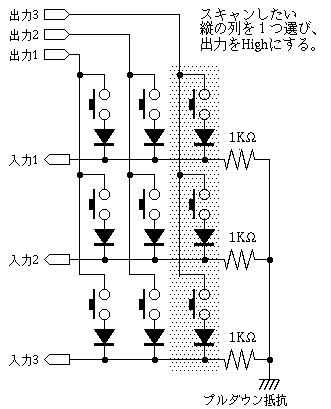

こんにちはシューです
皆さんはキーマトリックスを理解していますでしょうか？
私はほとんどしていないです
なので、ここでまとめながら理解を深めていこうと思います
参考にした記事によると
複数のキースイッチの状態を調べるのであれば、本来ならスイッチの数だけ 入力ポートが必要となる
しかし、キーボードのように大量のキーでは 入力ポートが不足してしまう。 このような時に使われる方法が、キーマトリックススキャンである。
と書いてありますね。つまりは、「キーボード作るときにデジタルピンが足りないからキーマトリックス使おうね」ってことです
確かにキーボードは100キーとかザラにあります
一個一個処理を書いてたらデジタルピンも足りないですし、スケッチプログラム>もかなりの長さになっちゃいます
それは避けたいですよね
あ、デジタルピンというのはArduinoやラズパイなどのピンのことです
この記事では多少電子工作の知識があることを前提に進んでいきます
先ほどの記事の回路図です

こんな感じの回路になります
詳しい解説は次の章にしますが、HIGHとLOWを組み合わせる感じなんですかね
ちなみに抵抗がついてるのはプルダウンプルアップもあるよといって、回路の浮いている状態を解消するやつです
pro microとかには内臓抵抗があるのでスケッチでやることができます
そのため、私の回路では抵抗はつけていません
その方がすっきりするでしょ？
キーマトリックスと回路についてはわかりましたが、あの記事だけでは仕組みがちょっと...
なので、調べてきました
どうやら、順番に一列づつ監視していて、入力が確認されたらHigh、Lowで入力する...みたいな？
ごほん、一列目のスイッチを読むためには、まず出力1をHighにしてそれ以外をLowにします
そしたら、入力1から3の状態を読み取ることで、SWの状態がわかります
終ったら、二列目を読みます。出力2をHigh、それ以外をLowにして
入力1から3の状態を読む。
これを繰り返すことで、少ないデジタルピンでたくさんのキーが読み取れますよね
参考にした図があるのでこちらを見てみると言ってることが分かると思います
ここで注意です
回路図を見て、「あれ？ダイオードがあるな」って思った人もいると思います
そうです、こちらのダイオードが大事なんです
スイッチングダイオードといって、電流が逆流しないようにするためにつけます
これがないと、同時押しをしたときに、全く別の入力になるというバグが生じます
とりあえず、バグらないようにつけるということを覚えておきましょう
いかがでしょうか？
キーマトリックスについてあんまり理解ができなかったんですが
この機会でちゃんと理解仕様と思って、調べて見ました
私は結構理解ができたつもりです
まぁ、これが理解できなくてキーボードは作れますが
分かっている人と分かっていない人だと結構違いが出てくるなと思うので
分かって損はないですよ
ではでは
ツイートする